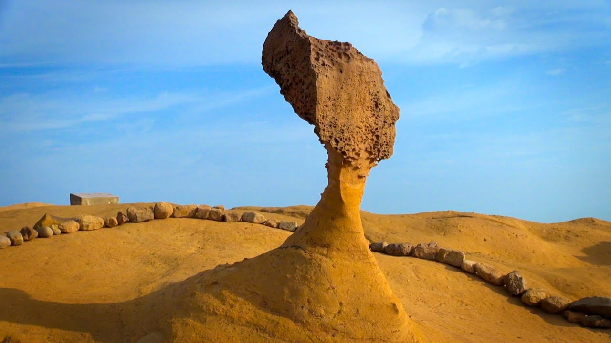

타이베이 101(중국어: 台北101 타이베이이바이링이[*] , 영어: TAIPEI 101) 혹은 타이베이 세계금융센터(영어: Taipei World Financial Center 타이베이 월드 파이낸셜 센터[*])[1]는 타이완 타이베이에 1999년부터 2004년까지 KTRT 509미터, 101층으로 지은 타이완 섬의 대표적인 마천루로, 2010년 1월 3일(현지시간)까지 세계의 고층 빌딩 중에서 제일 높은 고층 빌딩이었다. 원래는 W 모양으로 지었으나, 1/3정도 짓다가 흔들려 W형에서 L형으로 고쳤다. 위치보기
※타이베이 시내 호텔에서 픽업-드랍이 가능하다.
- 예류
타이베이 북부 해안에 위치한 예류는 해수욕장과 온천, 기암괴석으로 유명한 관광 도시다. 특히 희귀한 모양의 바위들이 해안에 모여 있는 예류지질공원은 예류 관광의 필수 코스로 꼽힌다. 이곳의 바위들은 세계 지질학계에서 중요한 해양 생태계 자원으로 평가받는 한편, 푸른 바다와 침식된 산호 조각물들이 함께 어우러져 자연이 그려낸 한 폭의 그림 같은 풍경을 보여 준다. 타이베이에서 당일치기 여행이 가능해 드라이브 코스로도 인기 있다.
- 스펀 역
스펀 역(중국어: 十分車站)은 타이완 신베이 시 핑시 구에 위치한 타이완 철로 관리국 핑시 선의 철도역이다.
스펀 폭포도 있고 스펀 탄광마을 에서는 닭날개볶음밥, 땅콩아이스크림, 역앞에 소세지등을 먹을수 있고 천등날리기를 할수있다. (영화 그 시절 우리가 좋아했던 소녀) - 진과스
진과스(金瓜石)는 중화민국 신베이 시 루이팡 구에 있는 옛 마을이다. 이곳에 있는 탄광에서 20세기 전반에 금 채굴 작업이 활발하게 이루어졌으나 20세기 후반에 금이 차차 고갈되기 시작하자 점점 위축되어 폐광되었다. 최근에는 한 관광 명소로 명맥을 잇고 있다.
광부도시락: 진과스 유적 내부에서는 금 채굴 노동자들이 먹던 도시락을 복원하여 관광지 먹거리로 판매하고 있다. 이를 광부도시락이라고 부르며, 일정 요금을 더 낼 경우에는 광부도시락 통을 기념품으로 가져가게 하고있다
+진과스 황금폭포, - 지우펀
타이베이에서 버스로 약 1시간 20분 거리에 위치한 지우펀은 타이완의 옛 정취를 흠뻑 느낄 수 있는 곳이다. 지우펀은 1920~1930년대 금광 채굴로 번성을 누리던 도시였으나 광산이 폐광된 이후 한적한 시골 마을로 쇠락했다. 하지만 1989년 베니스 국제영화제에서 그랑프리를 수상한 영화 <비정성시(悲情城市)> 촬영지로 다시금 매스컴의 주목을 받았다. 현재는 관광 산업으로 활기를 되찾아 타이베이 근교 여행지로 인기를 누리고 있다.
+샌과치히로의 행방불명, 홍등구경
타이베이 시내에서 가장 규모가 큰 야시장이다. 1909년에 시작되어 100년이 넘는 역사를 자랑하는 유서 깊은 시장이다. 스린 거리를 관통하는 다둥루와 그 안쪽의 츠청궁을 중심으로 야시장이 형성된다. 규모로 보나 유명세로 보나 첫손에 꼽히는 쇼핑과 음식의 천국으로 매일 밤 불야성을 이룬다. 현지인들뿐 아니라 타이베이를 방문하는 외국인 관광객들도 빠지지 않고 들르는 명소다.
+큐브스테이크, 치즈감자, 망고젤리가 대표적인 음식
위치보기